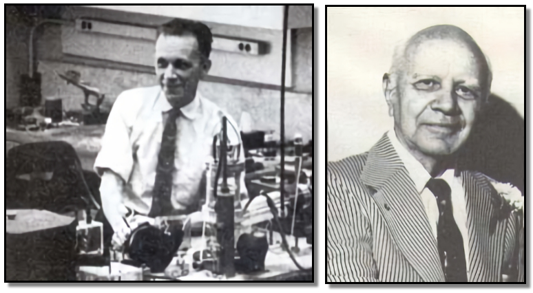

Nya solpaneler
erbjuder en effektiv och hållbar lösning för energiproduktion. Genom avancerad teknik maximerar de solenergiens effektivitet och tillförlitlighet. Deras miniatyriserade design och flexibilitet gör dem lämpliga för olika installationer. Med potential att minska koldioxidutsläpp och främja hållbarhet är nya solpaneler en viktig komponent för den gröna energiomställningen.

Russell Ohl,
en amerikansk fysiker, är känd för att ha uppfunnit solcellen. Genom sin forskning på halvledarmaterial upptäckte han principen för solcellen 1941. Ohls arbete banade väg för utvecklingen av solenergiteknologi och dess användning som en ren och hållbar energikälla.

Äldre solpanelerna
utgjorde grunden för solenergiindustrin. Med enklare teknik och mindre effektiva material var de tidiga panelerna mindre än dagens modeller. Trots sina begränsningar markerade de början på användningen av solenergi som en alternativ energikälla och banade väg för fortsatt forskning och utveckling inom området.